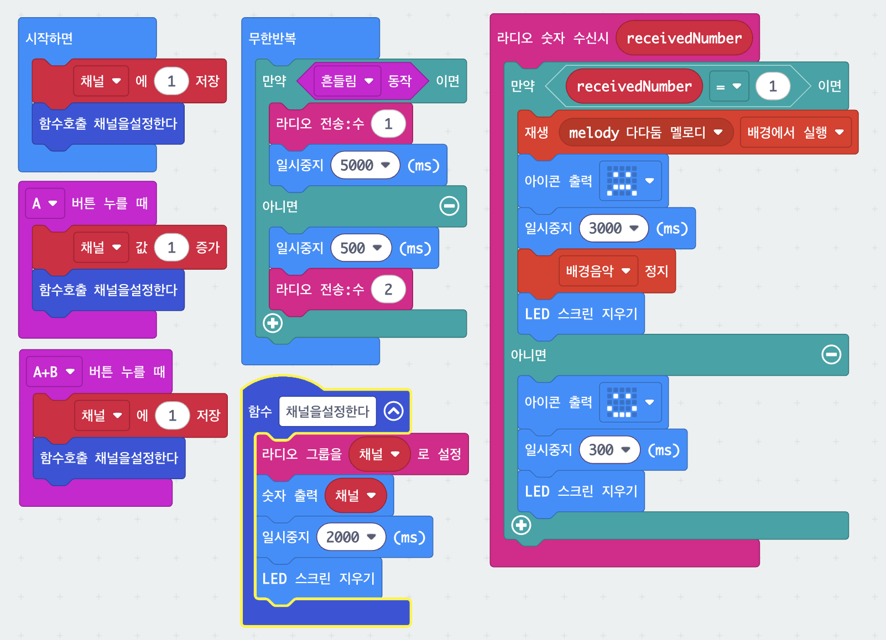

5. 지진 대피 라디오 알림
한 대가 흔들리면 같은 채널을 쓰는 다른 micro:bit에도 경보가 전달되는 시스템입니다. 흔들린 쪽은 숫자 1을, 평소에는 숫자 2를 계속 보냅니다. 받은 쪽은 그 숫자가 1이면 경보를, 2이면 평상시 표시를 보여 줍니다. 채널을 바꾸는 일을 함수로 따로 빼 둔 것도 눈여겨보세요.
블록 코드
그림을 클릭하면 크게 볼 수 있어요.

준비물
- micro:bit 2대 이상
- 모든 micro:bit에 같은 코드를 넣습니다
- 소리를 들으려면 이어폰 또는 스피커
사용법
| A 버튼 | 채널 번호가 1 늘어납니다 |
|---|---|
| A + B 동시에 | 채널을 1번으로 되돌립니다 |
| 흔들기 | 같은 채널의 다른 micro:bit로 경보를 보냅니다 |
채널을 바꾸면 화면에 지금 채널 번호가 잠깐 표시됩니다.
막힐 때
두 대의 채널 번호가 반드시 같아야 합니다.
신호가 오지 않으면 다른 것보다 먼저 양쪽 화면의 채널 숫자부터 확인하세요.
A+B를 함께 눌러 둘 다 1번으로 맞추면 가장 빠릅니다.
남의 경보가 울려요.
주변 다른 조와 채널이 겹쳤습니다. A 버튼으로 우리 조만 쓰는 번호로 옮기세요.
경보가 조금 늦게 와요.
보낸 쪽은 한 번 흔들면 5초 동안 계속 신호를 보냅니다. 정상입니다.